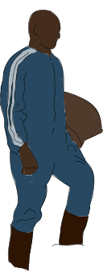

Voor de optimale ervaring raden wij aan deze website op Chrome, met geluid te bezoeken.
Wanneer heb jij voor het laatst nog een stukje chocolade gegeten?

Gemiddeld consumeert een Nederlander jaarlijks ongeveer 4,5 kilo chocolade. Nederland staat wereldwijd op de 13e plek van grootste chocoladeconsumenten.
Weet je wat er allemaal nodig is om jouw stukje chocolade te maken?
Ontdek wat er achter elke hap schuilt!
Scroll door het verhaal en klik op de gekleurde elementen om meer te ontdekken!

alles gezien? klik op de boot
Ivoorkust

In Europa zijn we oplossingen aan het bedenken om de situatie in landen als Ivoorkust te verbeteren.
Zo heeft het Europese Parlement de EUDR wet opgesteld.
Deze wet zorgt ervoor dat producten die in Europa worden verkocht, niet zijn geproduceerd ten koste van ontbossing of landdegredatie ter plekke.
Daarnaast moeten bedrijven onderzoeken of ze aan de lokale wetgeving voldoen.
Maar hoe zit het met ons als consumenten? Hoe kunnen wij bijdragen aan verandering?